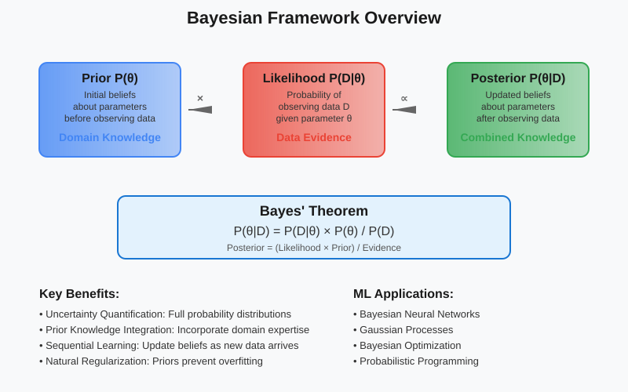
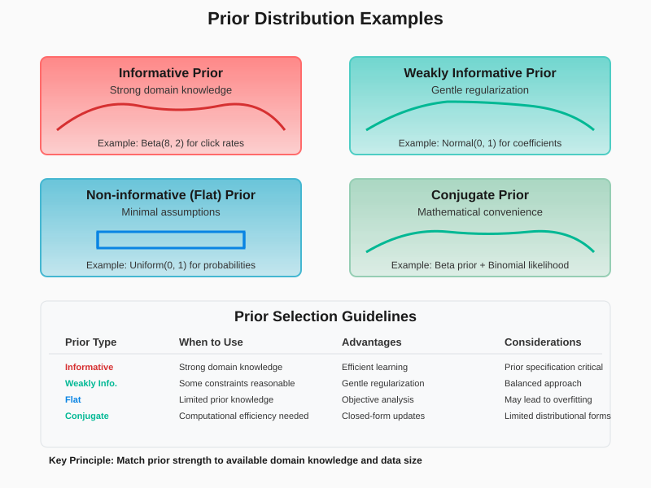
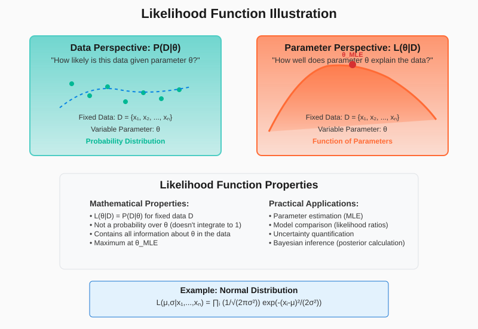
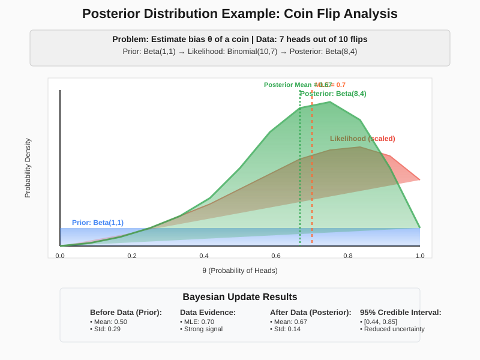
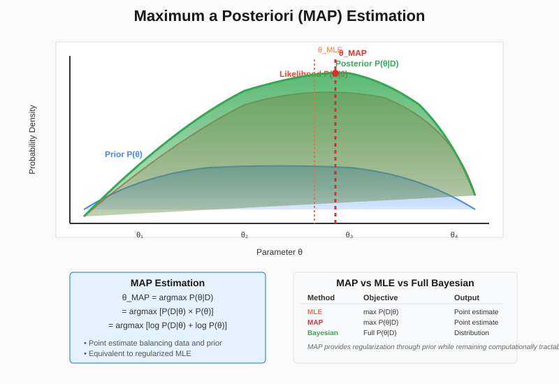
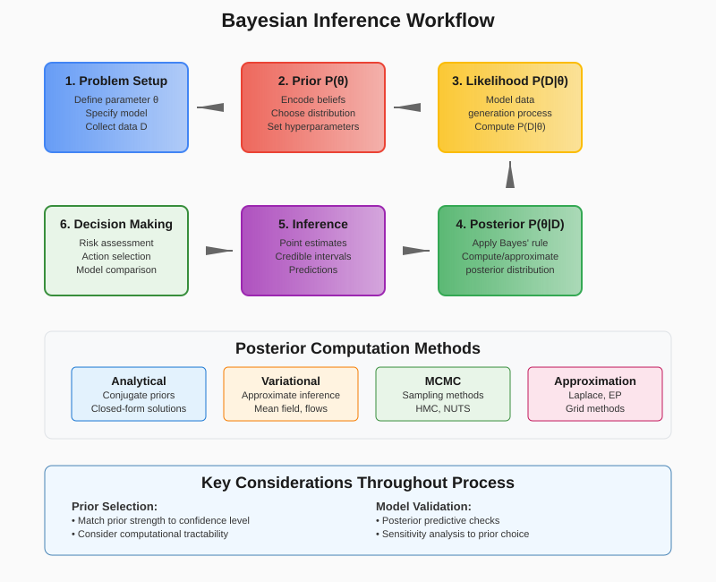
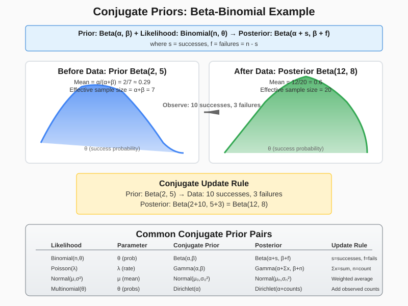

Bayesian Statistics: Foundations for Machine Learning
📋 Quick Navigation
- 🎯 Introduction to Bayesian Statistics
- 📊 Bayes' Theorem Fundamentals
- 🔍 Priors, Likelihood, and Posterior
- 📈 Maximum a Posteriori (MAP) Estimation
- 🔬 Bayesian Inference Examples
- 🧮 Conjugate Priors
- 🚀 Practical Applications in ML
- 📚 References & Further Reading
🎯 Introduction to Bayesian Statistics
Bayesian statistics provides a powerful framework for reasoning under uncertainty, making it invaluable for machine learning applications. Unlike frequentist approaches, Bayesian methods treat parameters as random variables with probability distributions, allowing us to incorporate prior knowledge and update beliefs as new data becomes available.

Key Advantages for Machine Learning:
- Uncertainty Quantification: Provides full posterior distributions rather than point estimates
- Prior Knowledge Integration: Incorporates domain expertise through prior distributions
- Sequential Learning: Updates beliefs incrementally as new data arrives
- Model Selection: Natural framework for comparing competing hypotheses
- Regularization: Priors act as regularizers, preventing overfitting
Core Philosophy:
Bayesian inference treats all unknowns as random variables characterized by probability distributions. This probabilistic approach enables principled reasoning about uncertainty and provides a coherent framework for learning from data.
📊 Bayes' Theorem Fundamentals
Bayes' theorem forms the mathematical foundation of Bayesian statistics, providing the mechanism for updating beliefs in light of new evidence.
Bayes' Theorem:
P(θ|D) = P(D|θ) × P(θ) / P(D)
Component Breakdown:
- P(θ|D): Posterior distribution - updated beliefs about parameter θ after observing data D
- P(D|θ): Likelihood function - probability of observing data D given parameter θ
- P(θ): Prior distribution - initial beliefs about parameter θ before seeing data
- P(D): Marginal likelihood (evidence) - normalizing constant ensuring posterior integrates to 1
Alternative Form:
Posterior ∝ Likelihood × Prior
The marginal likelihood P(D) often acts as a normalizing constant and can be computed as:
P(D) = ∫ P(D|θ) × P(θ) dθ
Intuitive Interpretation:
Bayes' theorem mathematically formalizes how we should update our beliefs when presented with new evidence. The posterior distribution represents our refined understanding after combining prior knowledge with observed data.
🔍 Priors, Likelihood, and Posterior
Understanding the three core components of Bayesian inference is essential for effective application in machine learning contexts.
Prior Distributions P(θ)
Prior distributions encode our initial beliefs or assumptions about parameters before observing any data.

Types of Priors:
- Informative Priors: Incorporate substantial domain knowledge
- Example: Beta(2, 8) for click-through rates based on historical data
-
Use Case: When prior experience provides strong guidance
-
Weakly Informative Priors: Provide gentle regularization without strong assumptions
- Example: Normal(0, 1) for regression coefficients
-
Use Case: When some constraints are reasonable but flexibility is desired
-
Non-informative (Flat) Priors: Express minimal prior knowledge
- Example: Uniform distribution over reasonable parameter range
-
Use Case: When prior knowledge is limited or objectivity is prioritized
-
Conjugate Priors: Mathematically convenient priors that yield closed-form posteriors
- Example: Beta prior with Binomial likelihood yields Beta posterior
- Use Case: When computational efficiency is important
Likelihood Function P(D|θ)
The likelihood function quantifies how probable the observed data is for different parameter values.

Key Properties:
- Data Dependency: Function of observed data D
- Parameter Function: Viewed as function of θ for fixed data
- Not a Probability: Does not integrate to 1 over θ
- Information Source: Carries all information about θ contained in the data
Maximum Likelihood Estimation (MLE):
θ_MLE = argmax_θ P(D|θ)
MLE finds the parameter value that makes the observed data most probable.
Posterior Distribution P(θ|D)
The posterior distribution represents our updated beliefs about parameters after observing data.

Posterior Characteristics:
- Combines Information: Balances prior beliefs with data evidence
- Uncertainty Quantification: Full distribution rather than point estimate
- Sequential Updates: Can serve as prior for future observations
- Decision Making: Provides foundation for optimal decision theory
Posterior Predictive Distribution:
For predicting new observations, we integrate over parameter uncertainty:
P(D_new|D) = ∫ P(D_new|θ) × P(θ|D) dθ
📈 Maximum a Posteriori (MAP) Estimation
Maximum a Posteriori estimation finds the parameter value that maximizes the posterior distribution, providing a point estimate that balances likelihood and prior information.

MAP Objective:
θ_MAP = argmax_θ P(θ|D) = argmax_θ [P(D|θ) × P(θ)]
Log-MAP Formulation:
θ_MAP = argmax_θ [log P(D|θ) + log P(θ)]
Relationship to Regularization:
MAP estimation is equivalent to regularized maximum likelihood:
- L2 Regularization: Corresponds to Gaussian prior
- L1 Regularization: Corresponds to Laplace prior
- Elastic Net: Combination of Gaussian and Laplace priors
MAP vs MLE Comparison:
| Aspect | MLE | MAP |
|---|---|---|
| Objective | Maximize likelihood only | Maximize posterior |
| Prior | No prior information | Incorporates prior |
| Regularization | None (can overfit) | Natural regularization |
| Uncertainty | No uncertainty quantification | Point estimate only |
| Computation | Often simpler | Requires prior specification |
When to Use MAP:
- Limited Data: Prior helps when data is scarce
- Regularization Needed: Prevents overfitting in high-dimensional problems
- Domain Knowledge: When reliable prior information exists
- Computational Constraints: Easier than full Bayesian inference
Limitations of MAP:
- Point Estimate: Loses uncertainty information
- Prior Sensitivity: Results depend on prior choice
- Mode Focus: May miss multimodal posteriors
🔬 Bayesian Inference Examples
Practical examples demonstrate how Bayesian inference works in real machine learning scenarios.

Example 1: Coin Flip Analysis
Problem: Estimate the probability θ of heads for a biased coin.
Setup:
- Data: 7 heads out of 10 flips
- Likelihood: Binomial(n=10, θ)
- Prior: Beta(α=1, β=1) - uniform prior
Bayesian Update:
Prior: θ ~ Beta(1, 1)
Likelihood: P(D|θ) = θ^7 × (1-θ)^3
Posterior: θ|D ~ Beta(1+7, 1+3) = Beta(8, 4)
Results:
- Prior Mean: 0.5 (uninformed)
- MLE: 0.7 (7/10)
- Posterior Mean: 0.67 (8/12)
- 95% Credible Interval: [0.44, 0.85]
Example 2: Linear Regression with Gaussian Prior
Problem: Predict house prices with Bayesian linear regression.
Model:
y = Xβ + ε, where ε ~ N(0, σ²I)
Prior: β ~ N(0, τ²I)
Posterior Distribution:
β|D ~ N(μ_post, Σ_post)
μ_post = (X^T X + σ²/τ² I)^(-1) X^T y
Σ_post = σ² (X^T X + σ²/τ² I)^(-1)
Benefits:
- Uncertainty Quantification: Confidence intervals for predictions
- Regularization: Prior prevents overfitting
- Feature Selection: Sparse priors encourage feature selection
Example 3: A/B Testing with Beta-Binomial Model
Problem: Compare conversion rates between two website versions.
Setup:
- Version A: 120 conversions out of 1000 visitors
- Version B: 135 conversions out of 1000 visitors
- Prior: Beta(1, 1) for both versions
Posterior Distributions:
θ_A|D_A ~ Beta(121, 881)
θ_B|D_B ~ Beta(136, 866)
Decision Making:
P(θ_B > θ_A) = ∫∫_{θ_B > θ_A} f(θ_A|D_A) × f(θ_B|D_B) dθ_A dθ_B
Results:
- Probability B is better: 89.3%
- Expected improvement: 1.2% conversion rate increase
- Decision: Deploy Version B with high confidence
🧮 Conjugate Priors
Conjugate priors provide mathematical convenience by ensuring the posterior has the same distributional form as the prior.

Definition:
A prior P(θ) is conjugate to likelihood P(D|θ) if the posterior P(θ|D) belongs to the same distributional family as the prior.
Common Conjugate Pairs:
| Likelihood | Parameter | Conjugate Prior | Posterior |
|---|---|---|---|
| Binomial | Success probability θ | Beta(α, β) | Beta(α + successes, β + failures) |
| Poisson | Rate λ | Gamma(α, β) | Gamma(α + sum(x), β + n) |
| Normal | Mean μ (known σ²) | Normal(μ₀, σ₀²) | Normal(μ_post, σ_post²) |
| Normal | Variance σ² (known μ) | Inverse-Gamma(α, β) | Inverse-Gamma(α + n/2, β + SSE/2) |
| Multinomial | Probabilities θ | Dirichlet(α) | Dirichlet(α + counts) |
Advantages of Conjugate Priors:
- Computational Efficiency: Closed-form posterior updates
- Sequential Learning: Easy incremental updates
- Interpretability: Clear parameter meaning
- Theoretical Tractability: Mathematical analysis possible
Beta-Binomial Example in Detail:
Prior: θ ~ Beta(α, β)
Likelihood: X|θ ~ Binomial(n, θ)
Posterior: θ|X ~ Beta(α + x, β + n - x)
Parameter Interpretation:
- α: Equivalent prior successes
- β: Equivalent prior failures
- α + β: Effective prior sample size
Updating Rules:
- New α: α_new = α_old + observed_successes
- New β: β_new = β_old + observed_failures
Practical Benefits:
- Online Learning: Real-time updates as new data arrives
- Prior Elicitation: Natural interpretation for domain experts
- Computational Speed: No numerical integration required
🚀 Practical Applications in ML
Bayesian methods provide powerful tools for various machine learning applications, offering principled uncertainty quantification and robust inference.
Key Application Areas:
1. Bayesian Neural Networks
Concept:
- Parameter Uncertainty: Treat weights as random variables
- Epistemic Uncertainty: Model uncertainty about parameters
- Aleatoric Uncertainty: Data-dependent noise modeling
Implementation:
# Variational inference for BNN
def variational_loss(params, data):
# KL divergence between variational and prior
kl_div = kl_divergence(q_theta(params), p_theta)
# Expected log-likelihood
expected_ll = E_q[log_likelihood(data, theta)]
# ELBO objective
return kl_div - expected_ll
Benefits:
- Calibrated Predictions: Uncertainty-aware outputs
- Active Learning: Query points with high uncertainty
- Robust Decision Making: Account for model uncertainty
2. Gaussian Processes
Bayesian Treatment:
- Prior over Functions: GP prior captures function smoothness
- Posterior Inference: Exact posterior for regression
- Uncertainty Quantification: Predictive variance
Applications:
- Hyperparameter Optimization: Bayesian optimization
- Time Series Forecasting: Uncertainty-aware predictions
- Experimental Design: Optimal point selection
3. Bayesian Optimization
Framework:
def bayesian_optimization():
for i in range(max_iterations):
# Fit GP to observed data
gp.fit(X_observed, y_observed)
# Acquisition function optimization
x_next = optimize_acquisition(gp, acquisition='EI')
# Evaluate objective
y_next = objective_function(x_next)
# Update observations
X_observed.append(x_next)
y_observed.append(y_next)
Acquisition Functions:
- Expected Improvement (EI): Balance exploration/exploitation
- Upper Confidence Bound (UCB): Optimistic exploration
- Knowledge Gradient: Information-theoretic approach
4. Approximate Inference Methods
Variational Inference:
- Mean Field Approximation: Factorized posterior
- Normalizing Flows: Flexible posterior approximations
- Variational Autoencoders: Deep generative models
Markov Chain Monte Carlo:
- Metropolis-Hastings: General-purpose sampling
- Hamiltonian Monte Carlo: Efficient for continuous spaces
- No-U-Turn Sampler: Adaptive HMC variant
Implementation Tools:
| Library | Strengths | Use Cases |
|---|---|---|
| PyMC3/4 | User-friendly, probabilistic programming | General Bayesian modeling |
| Stan | Efficient HMC, mature ecosystem | Complex hierarchical models |
| Edward/TensorFlow Probability | Deep learning integration | Bayesian neural networks |
| Pyro | PyTorch integration, flexible | Research applications |
💻 Code Examples & Resources
Google Colab Notebooks
 Bayesian Statistics Fundamentals - Interactive introduction with examples
Bayesian Statistics Fundamentals - Interactive introduction with examples
 Bayesian ML Applications - Practical implementations in PyMC3 and TensorFlow Probability
Bayesian ML Applications - Practical implementations in PyMC3 and TensorFlow Probability
Relevant Models & Libraries
Hugging Face Models:
- Bayesian BERT - Uncertainty-aware transformers
- Probabilistic Embeddings - Bayesian word embeddings
Key Libraries:
- PyMC3/4: Probabilistic programming in Python
- TensorFlow Probability: Bayesian deep learning
- Pyro: Probabilistic programming on PyTorch
- Stan: Statistical modeling platform
📚 References & Further Reading
Essential Papers
- "Pattern Recognition and Machine Learning" - Christopher Bishop (2006)
- Comprehensive treatment of Bayesian methods in ML
-
"Bayesian Data Analysis" - Gelman et al. (2013)
- Authoritative reference for Bayesian statistics
-
"Weight Uncertainty in Neural Networks" - Blundell et al. (2015)
- Seminal paper on Bayesian neural networks
-
"Auto-Encoding Variational Bayes" - Kingma & Welling (2013)
- Variational autoencoders and approximate inference
- arXiv:1312.6114
Advanced Topics
- "Variational Inference: A Review for Statisticians" - Blei et al. (2017)
- Comprehensive review of variational methods
-
"The No-U-Turn Sampler: Adaptively Setting Path Lengths in Hamiltonian Monte Carlo" - Hoffman & Gelman (2014)
- Efficient MCMC sampling algorithm
- Journal of Machine Learning Research
Practical Resources
- "Bayesian Methods for Hackers" - Cameron Davidson-Pilon
- Practical introduction with code examples
-
"Think Bayes" - Allen B. Downey
- Beginner-friendly introduction to Bayesian thinking
- Green Tea Press
📝 Document Information: - Topic: Bayesian Statistics for Machine Learning - Target Audience: AI researchers, ML engineers, data scientists - Difficulty Level: Intermediate to Advanced - Last Updated: September 2025 - Format: MkDocs Material Theme Compatible